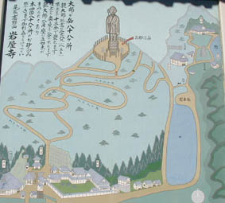
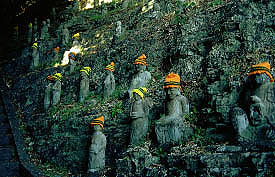
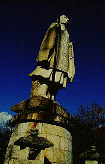
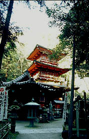
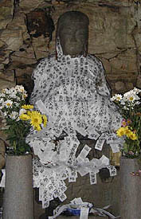
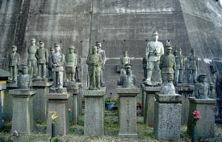
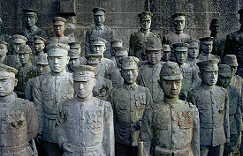
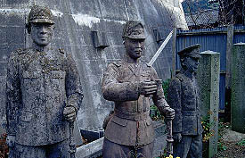
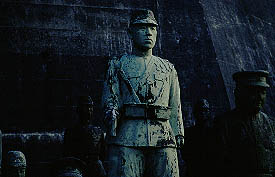

岩屋寺/愛知県南知多町
知多半島の先の方に岩屋寺という寺がある。
確か知多八十八ケ所の番外札所になっていた筈。その中でも大きいお寺である。

境内案内図。
図中左下の辺りが本堂などがあるところ。で、その裏山一帯がミニ八十八ケ所巡りになっている。
図によると山頂には何やらお地蔵さんのようなものがそびえ立っている。で、その裏手は奥の院。
四国八十八ケ所のレプリカである知多八十八ケ所。で、その番外霊場にある八十八ケ所。
レプリカの入れ子状態で何がなんだか判らなくなってくるが、そこはそれ、取り敢えず何も考えずに登りはじめましょ。

本堂奥のえらく立派な重層の経蔵を過ぎ、その裏手の斜面には相当の数の石仏が。
そろそろ陽も暮れかかってきた時間だったのでちょっと気持ち悪かったです…
山道の途中途中に祠が点在しておりそこを拝んだり拝まなかったりしながら山頂に着く。

山頂には10メートル程の弘法大師の石像が立っていた。
けっこう立派なもので、苦労して登ってきた甲斐があったとちょっぴり思わせてくれる物件である。
 
山頂から山の裏側に降りると奥の院がある。
墓地を抜けて一番奥にはコンクリの三重の塔がある。時刻も時刻だったのだが何と言うか凄く陰気くさい印象でした。
岩屋寺の話は以上。ここからは余談です。
突然だが話は数年前に遡る。
名古屋の覚王山の日泰寺の近くに軍人墓地と呼ばれる墓地があるという話をある本で見かけた。
それはコンクリートで出来た軍人像で100体近くの軍人さんがずらりと並んでいるというものだというのだ。
その文章を読んだ瞬間から私はこの軍人墓地の虜になってしまい、今度名古屋に行った時には絶対に見に行こう、と心に決めていた。
で、その年、名古屋に行った際、軍人墓地があると思われる場所に行ってみたが、そのような軍人像はどこにもなかった。
地元の人に聞いてみても要領を得ず、近くにある奉安塔のことじゃないか、とかそんなものはないとかいわれて一日中捜しまわって、挙げ句の果てに軍人さんのお墓なら平和公園の墓地に移転したという話を聞いて、物凄く広い平和公園の墓地ヘ行って、あったのは軍人さんの墓石だけで帰りのバスが無くて道に迷って車に曵かれそうになって雨が降ってきて傘がなくってそのうちお腹が痛くなってきて、でも腹が減ってきて駆け込んだ食堂の飯が不味くて泣きそうになる位散々な一日であった。
そして翌年、我が珍寺大道場の姉妹ページの日本すきま漫遊記のへりおす氏から詳細な場所を教えていただき、再度名古屋にリターンマッチをかけにいった。
教えていただいたところには小さな家があり、しかもそこはその周辺も含めてかなり丹念に探したところであった。
するとその家からひとりのお婆さんが出てきたので軍人墓地の事を聞くと、お婆さんハッとした表情になった。
聞けばそのお婆さん、軍人墓地をつくった方の娘さんだというではないか。
え、じゃあ軍人墓地は？
ここにありました、との事だ。
お婆さんの話によればその場所にあった軍人墓地は数年前に墓地拡張だったか道路拡張だったかによって撤去されてしまい、軍人像は現在はどこにあるのかよくわからないというのだ。
確か知多半島のどこかの寺だ、という雲を掴むような話で、途方に暮れてしまいながらも、取り敢えず見つけたら必ず連絡すると約束し、名古屋を後にしたのであった。
軍人像は今いずこ
…またまた話は岩屋寺に戻る。
奥の院を見た後、農家の庭先で買ったみかんを摘みながら岩屋寺の駐車場へ戻る途中ふらっと岩屋寺の門前のお寺の中庭を覗き込んだ。
するとそこに

軍人像が並んでいるではないか。
初めはピンとこなかったが、もしやこれがあの知多に移転したという軍人像なのでは、と思った瞬間、鳥肌が立つ思いだった。
そういえば覚王山のお婆さんはたぬきの寺とかいっていた。
あわてて表に回ってみるとたぬき寺としてあった。間違いない。これが覚王山にあった軍人墓地の軍人像だ！

人気のない境内にいまも整列する軍人像。
一体一体顔も違っていて勲章なども彫り込まれかなりリアルだ。
聞くところによると亡くなった兵士の顏写真を元に製作されたそうだ。
個人的には先の戦争にあまり思い入れはないが手を合わせずにはいられない光景だった。
 
軍人像のほとんどは昭和12（1937）年に上海上陸作戦でほとんど全滅となった名古屋第三師団歩兵第六連隊のものだ。
その戦闘は壮絶を極めたという。
残念ながら寺の人がいなかったのでここに移転された経緯は判らなかったが、この連隊がこの近くの野間沖から出撃したことは何かしらの因縁を感じざるを得ない。
確認できなかったがある伍長の台座にはこんな文が刻まれているそうだ
オトウサン ボクモオヲキクナツタラグンヂンニナリ オヂイサンノイイツケヲヨクマモッテ リッパナヒトニナリマス
情報提供はへりおすさんです。
2001.12.
珍寺大道場 HOME